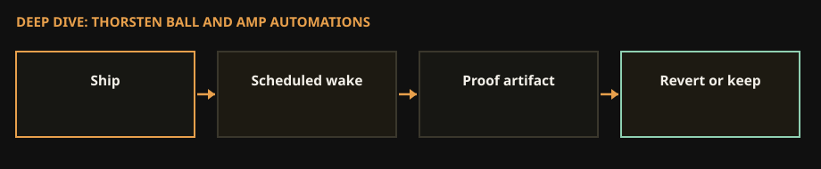

Deep Dive: Thorsten Ball and Amp Automations
A timestamped talk transcript, read in full: self waking agents, proof demands, 15 AGENTS.md files, Orbs and Runners, and a no PR process. Source: Amp Time Capsule 6, Thorsten Ball, October 2026. Confidence: High.

Prompt the what, not the how
At 00:02:50 in the transcript: modern agents need the goal and the constraints, not the method. No mention tags, no manual context assembly. The agent plus the codebase plus the process forms the working triad.
Going horizontal: full SDLC access
At 00:04:55: the agent sees deploys, CI, production logs, monitoring and metrics, and feature flags. A coding only agent guesses at impact. An agent with the full loop sees the result of its own change and reacts. This one access decision explains most of the gap between demo agents and his daily use.
Automations: the agent wakes itself
- Ship a change.
- Tell the agent: in two hours, check again. The agent schedules its own wake up.
- At wake: the agent checks deploy state, error rates, and user visible behavior.
- His worked case: the wake report said the commit is live, inference errors did not rise, and a user visible regression exists. Result: a revert, started by the agent report.
- Daily maintenance checks run on the same pattern. Snooze rules keep the sidebar clean: a thread sleeps until the next message matters.
The proof demand
At 00:14:01: he reviews load bearing code only. For the rest, one prompt rules, verbatim in the transcript at 00:15:00: Give me irrefutable proof that this works now. The agent, in a throwaway machine, installs what it needs and returns screenshots, videos, or a test matrix. Proof is an artifact, not a claim.
Codebase legibility kit
- Dev server start and stop as agent runnable commands, with seed data.
- A REPL the agent can drive.
- 15 AGENTS.md files across the Amp repo, scoped per area.
- Separate skills for the dev server, for cloud production access, for the data warehouse, and for the app framework.
- Threads as searchable context: a later agent reads an earlier thread as a source.
Orbs and Runners
An Orb is one throwaway remote machine per thread, scale to zero, no local dev state. A Runner is the opposite: a stateful shared machine, such as a macOS build runner. Orbs can spawn threads on a Runner. Agents pass files and messages both ways. The split maps to a simple rule: stateless work goes to Orbs, stateful work goes to Runners.
Process: no PRs, plugins for ops
His team pushes to main with no PR layer. Designers ship code. No Figma step. Bug reports from Slack start an agent with a diagnostic bundle attached. TypeScript plugins cover bug reports, user mail, system health, feature flags, and credits. Ops work is agent work with a plugin shape.
Eval your own instructions
At 00:29:04: after any AGENTS.md change, spawn 5 to 10 fresh Orbs and test if the new instruction holds in practice. An instruction that fresh agents ignore is not an instruction. This is the missing test step in most rule files.
Apply this to your work
Your builds already run long agent jobs. Add the wake pattern: each long job ends with a scheduled self check that reads its own output against the acceptance list and reports proof or a defect, in place of a status claim. Your study repos gain the legibility kit at once: one command to build, one to check, seed data for sample pages, and a per area rule file. And run his instruction eval on your own standing rules: spawn fresh sessions, give a task that tempts the old error, and count how often the rule holds.
Replication checklist
- Add one scheduled wake check to your longest running agent job.
- Write the proof demand into your review prompts verbatim.
- List your legibility gaps: no seed data, no REPL, no scoped rule file. Fix one per week.
- After your next rule file change, test it with 5 fresh sessions before you trust it.
Prompt file: prompts/proof-demand.md.
Visual map of this page
Two views of one page: a Mermaid flow for work order, rendered by the local Mermaid library in this folder, and a markmap for concept groups.
Mermaid source, for offline read
flowchart LR
A[Ship change] --> B[Agent wakes on schedule]
B --> C[Check deploy, errors, behavior]
C --> D{Proof holds?}
D -->|yes| E[Keep]
D -->|no| F[Revert with report]How to read the flow diagram. Step 1: start at the first box. Step 2: follow each arrow to the next stage. Step 3: at a branch box, read both paths before a choice. Step 4: a loop arrow means work returns for one more pass vs a test.
Markmap: concepts on this page
- Deep Dive: Thorsten Ball and Amp Automations
- Access
- Deploys and CI
- Logs and metrics
- Feature flags
- Machines
- Orbs, throwaway
- Runners, stateful
- Tests
- Proof demand
- Instruction eval, 5 to 10 fresh
- Access